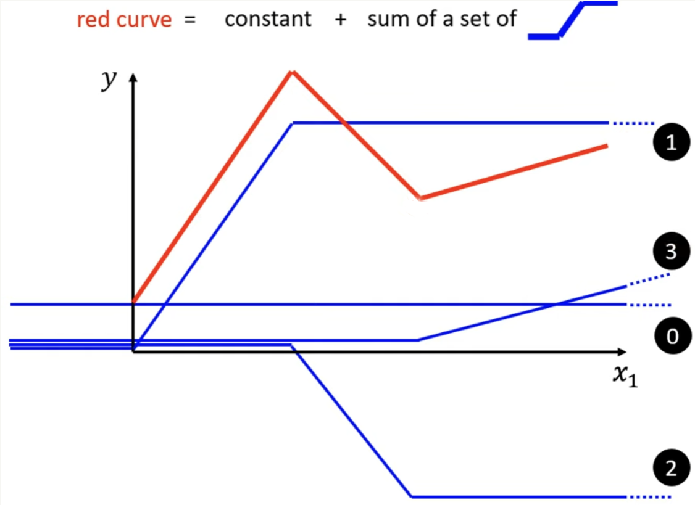
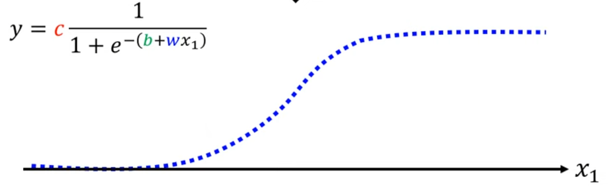
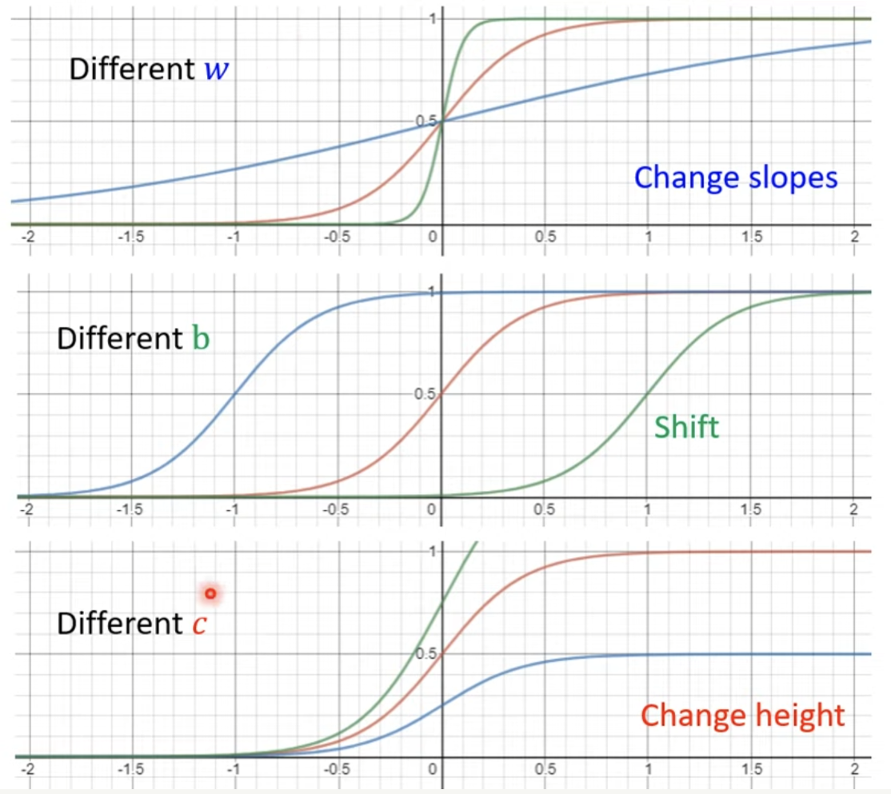
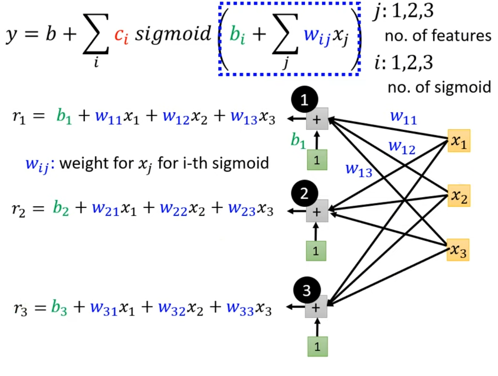
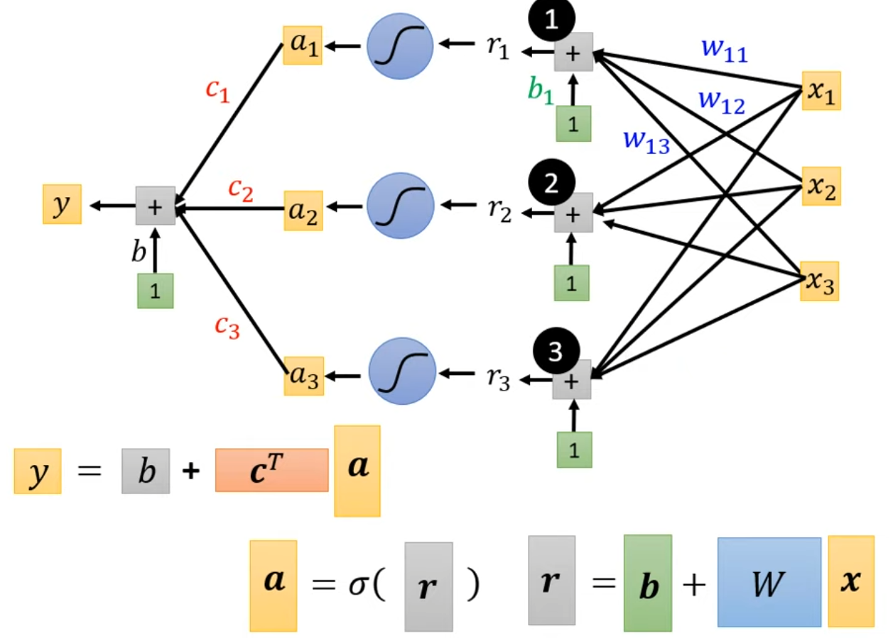
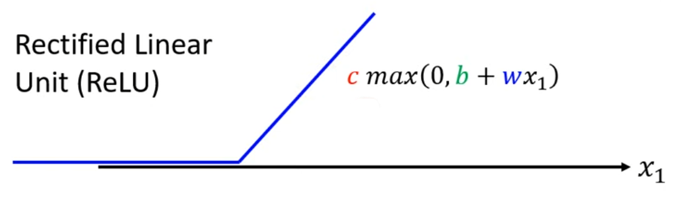
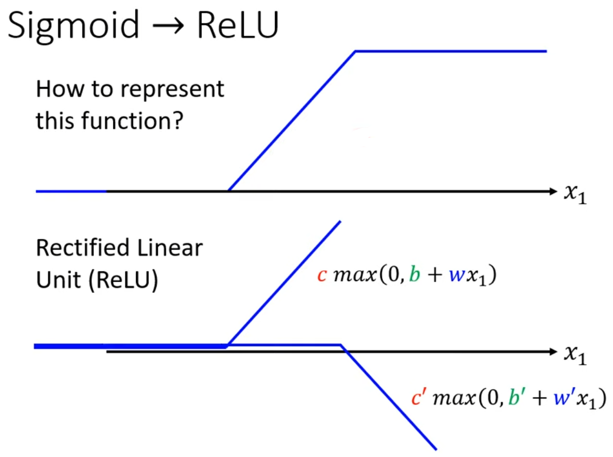
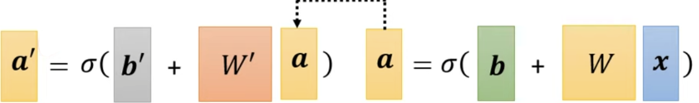
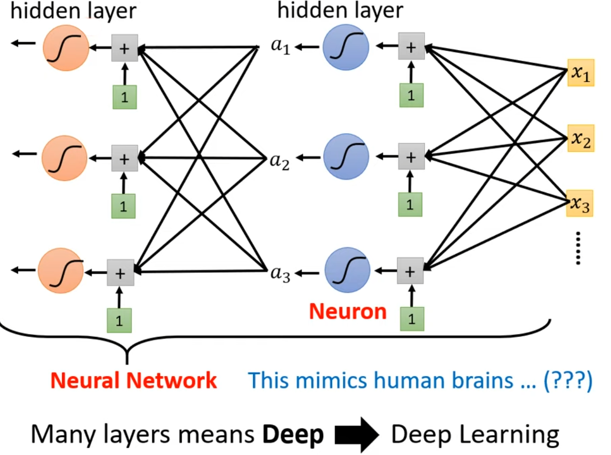

Machine Learning
ML就是让机器找到一个function。
例如：向function输入一段语音，输出语音对应的文字；向function输入一张图片，输出图片是什么；向function输入一张棋盘，输出下一步最佳落子位置……
根据function的不同，ML主要分为两种：Regression和Classification
- Regression：function的output是一个scalar；
- Classification：function的output是一个给定的option(class)。
但在简单的Regression和Classification之外，ML还有更为广泛的领域：Structured Learning，也即让机器学会创作，产生一个有结构的事物，例如一篇文章，一张图……
如何实现ML
要实现ML，通常需要以下步骤：
一、构建function
我们往往需要根据对应领域的知识，构建出一个带有未知parameters的function。以$y=b+wx_1$为例，该functino就叫做一个Model，其中$x_1$作为已知量输入，叫做feature，w（weight)和b（bias）就是未知的parameters。
二、定义Loss
Loss是一个关于parameters的function。Loss通过比较Model的output与真实值之间的差异，来表示某一组parameter的好坏。常见的Loss定义为：$L=\frac{1}{N}\sum\limits_ne_n$，其中e可以是$|y-\hat{y}|$（此时L叫做mean absolute error，MAE）或$(y-\hat{y})^2$（此时L叫做mean square error，MSE）等，需要根据具体情况进行选择。例如如果$y$和$\hat{y}$是一个概率分布的时候，往往选择Cross-entorpy。
三、Optimization
- 目标：找到$w^,b^=\mathop{\arg\min}\limits_{w,b}L$。
- 方法：Gradient Descent（暂不考虑local optimum）。
- 步骤（以$w$为例）：
- 随机选取一组随机初始值$w^0,b^0$；
- 计算$\frac{\partial L}{\partial w}|_{w=w^0}$；
- 为了让Loss的值变小，则更新$w$为：$w^1=w^0-\eta \frac{\partial L}{\partial w}|_{w=w^0}$，其中$\eta$叫做learning rate，是一个Hyperparameter
- 迭代进行2、3两步，直到终止（不想继续进行了，或者计算出$\frac{\partial L}{\partial w}|_{w=w^0}=0$）
Hyperparameter：人为设置的参数，不是机器需要学习的parameter
更加复杂的情况
Sophisticated Model
实际中，function往往并非线性，而是十分复杂的，这时，应用简单的线性Model并不能解决问题，我们需要更加复杂的Model。在ML中，解决方法一般如下：

可以看到，要获得一个如图所示的红色曲线，需要三个类似形状的蓝色曲线（hard-sigmoid function）和一个常数项相加得到。以此为例，不难得出：任何一个复杂的函数，都可以由多个如图所示的蓝色曲线和一个常数项相加近似得到。
sigmoid function
可是，由于蓝色曲线并非光滑的，所以对其进行Optimization非常困难，因此，这里采用sigmoid函数去逼近蓝色曲线。sigmoid函数如下图所示：

其函数表达式为：$y=c\frac{1}{1+e^{-b+wx_1}}$，简单记作$y=c sigmoid(b+wx_1)$。
那么，上面的sophisticated Model就可以转化为：$y=b+\sum\limits_ic_isigmoid(b_i+w_ix_1)$
对于一个sigmoid function来说，改变其参数可以得到不同形状的sigmoid function：

有了这些不同的sigmoid function，将其叠加后就可以逼近不同的non-linear Model。
multi-feature Model
到目前为止，这样的Model还有一个不足：无法应对多feature的情况。对此，我们将其进行改进，给Model添加多个feature后，得到如下Model：$y=b+\sum\limits_ic_isigmoid(b_i+\sum\limits_jw_{ij}x_{j})$，其中$j$为feature的编号。
假设某Model需要三个sigmoid function，那么我们可以通过下图直观的观察到其中的关系：

接下来，使用矩阵来简洁的表达其中的运算：
用符号表示为：$r=b+Wx$
整个Model由下图给出：

Optimization
对于$y=b+c^Ta$中所有未知的parameter（包括$b、c、W、b$），将其中元素拼成一个列向量
要进行Optimization，即找到$\theta^*=\mathop{\arg\min}\limits_\theta L$。步骤和最基本的Model类似，先随机选取一个初始值$\theta^0$，然后计算
记作$g=\nabla L(\theta^0)$。最后更新参数即可：$\theta^1=\theta^0-\eta g$
train as batch
实际Optimization的过程中，往往将train data分为多个batch，记每个batch对parameter的一次Optimization为一次update，所有batch串行进行一次update叫做一个epoch。如下图所示：
那么batch size和epoch也就成为了Hyperparameter。
ReLU
这样的Model有一个变体，我们使用ReLU（Rectified Linear Unit）来代替sigmoid function，ReLU如下图所示：

只要将两个ReLU叠加，就可以得到hard-sigmoid funccion：

那么对于上述Model，就可以表示为：$y=b+\sum\limits_{2i}c_imax(b_i+\sum\limits_jw_{ij}x_{j})$
对于sigmoid function和ReLU这样的函数，我们统称为Activate function。
Deep Learning
我们可以将上述Model进行套娃，如下图所示：

每个Activate function叫做一个Neuron，所有Neuron的总和叫做Neural Network；每一列Neuron叫做一个hidden layer，包含多个hidden layer的Model即是Deep Learning。

其中，$x_1,x_2,…$叫做Input Layer，Output前的最后一层叫做Output Layer。
大多数情况下，Deep Learning的表现要比单层的Model更好。但hidden layer过多会导致over fitness。
network的structure是非常重要的，需要自己设计好stucture，才能获得好的效果。设计的依据：试错+直觉。
那么，相对于Machine Learning，Deep Learning究竟做了什么呢？
其实就是把一个问题转化为了另一个问题。对于ML，往往需要找一组好的feature，这在有些场景下是非常困难的。但在DL中，只需要将一组不是那么好的feature放到一个设计好的structure中，就能得到较好的效果。因此问题从find feature转化为了design a network，而DL和ML的优劣，就归结于这两个问题哪个较为容易解决（例如在NLP领域，抽一组好的feature往往是更容易的；而对于影像辨识和语音辨识，抽一组好的feature是比较困难的）。